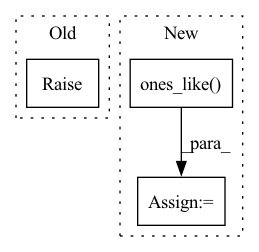

Pattern ID :41883

Before Change
The derivative of the path.
raise NotImplementedError(
f"Derivative does not exist for path of type {type(self)}."
)
After Change
The derivative of the path.
_, deriv = jax.jvp(
lambda _t: self.evaluate(_t, left=left), (t,), (jnp.ones_like(t),)
)
return deriv
In pattern: SUPERPATTERN
Frequency: 3
Non-data size: 3
Instances
Fragment ID: 117425836
Project Name: patrick-kidger/diffrax
Commit Name: 034711d5d26f376b35b2f1ae217424e1c8277e28
Time: 2022-01-10
Author: 33688385+patrick-kidger@users.noreply.github.com
File Name: diffrax/path.py
M Class Name: AbstractPath
N Class Name: AbstractPath
M Method Name: derivative(3)
N Method Name: derivative(3)
M Parent Class: eqx.Module
N Parent Class: eqx.Module
M File Name: diffrax/path.py
N File Name: diffrax/path.py
M Start Line: 100
M End Line: 102
N Start Line: 93
N End Line: 96
'>
Before Change
def unsorted_segment_mean(x, segment_ids, num_segments):
raise NotImplementedError
def unsorted_segment_min(x, segment_ids, num_segments):
After Change
assert x.shape == segment_ids.shape, "data.shape and segment_ids.shape should be equal"
shape = [num_segments] + list(x.shape[1:])
ones_data = torch.ones_like(x, dtype=x.dtype)
tensor = torch.zeros(*shape, x.dtype).scatter_add(0, segment_ids, x)
tensor_nums = torch.zeros(*shape, x.dtype).scatter_add(0, segment_ids, ones_data)
tensor = tensor / tensor_nums
'>
Fragment ID: 117425835
Project Name: tensorlayer/tensorlayerx
Commit Name: c65412794b3c56405fd6268ed7314a6e6881912f
Time: 2022-03-10
Author: jiaronghan@outlook.com
File Name: tensorlayerx/backend/ops/torch_backend.py
M Class Name: AnonimousClass
N Class Name: AnonimousClass
M Method Name: unsorted_segment_mean(3)
N Method Name: unsorted_segment_mean(3)
M Parent Class:
N Parent Class:
M File Name: tensorlayerx/backend/ops/torch_backend.py
N File Name: tensorlayerx/backend/ops/torch_backend.py
M Start Line: 1484
M End Line: 1484
N Start Line: 1541
N End Line: 1555
'>
Before Change
def unsorted_segment_mean(x, segment_ids, num_segments):
raise NotImplementedError
def unsorted_segment_min(x, segment_ids, num_segments):
After Change
def unsorted_segment_mean(x, segment_ids, num_segments):
segment_ids = ms.Tensor(segment_ids)
op = P.UnsortedSegmentSum()
x_one = msnp.ones_like(x, dtype=x.dtype)
sum = op(x, segment_ids, num_segments)
one = op(x_one, segment_ids, num_segments)
return sum/one
'>
Fragment ID: 117425832
Project Name: tensorlayer/tensorlayerx
Commit Name: f01c81cb588cf43ab2597837f37d4f77fcb85d44
Time: 2022-04-01
Author: jiaronghan@outlook.com
File Name: tensorlayerx/backend/ops/mindspore_backend.py
M Class Name: AnonimousClass
N Class Name: AnonimousClass
M Method Name: unsorted_segment_mean(3)
N Method Name: unsorted_segment_mean(3)
M Parent Class:
N Parent Class:
M File Name: tensorlayerx/backend/ops/mindspore_backend.py
N File Name: tensorlayerx/backend/ops/mindspore_backend.py
M Start Line: 1770
M End Line: 1770
N Start Line: 1790
N End Line: 1795